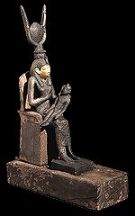
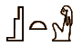
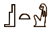

Isis was the wife of Osiris and the mother of Horus.
Since each pharaoh was considered the 'living Horus', Isis was very important.

Isis with Horus
Isis is often shown holding Horus on her lap. Isis is associated with thrones because her lap was the first 'throne' that Horus sat upon.
 This amulet is called the 'Isis knot' and is a symbol of protection.
This amulet is called the 'Isis knot' and is a symbol of protection.
A temple was built to honour Isis at Philae. It is still standing today.

 
Isis

Isis